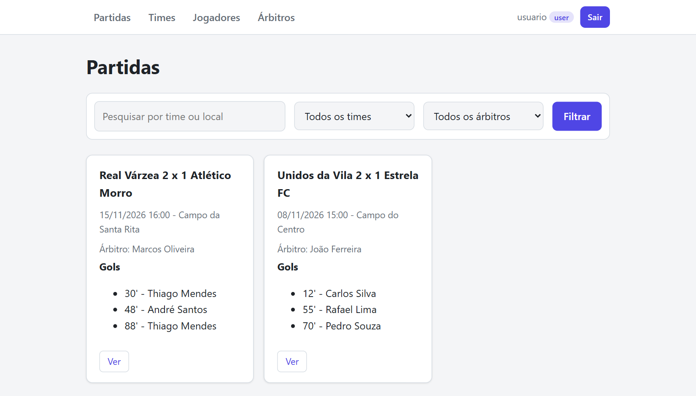
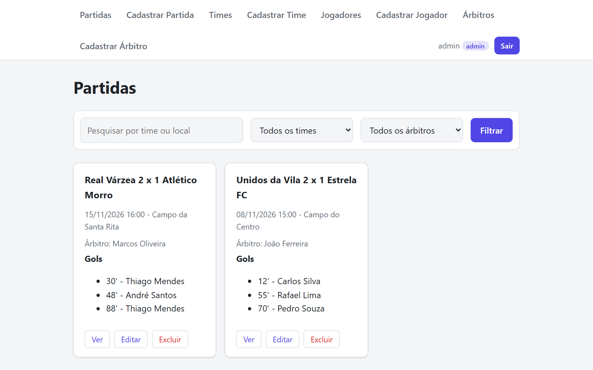
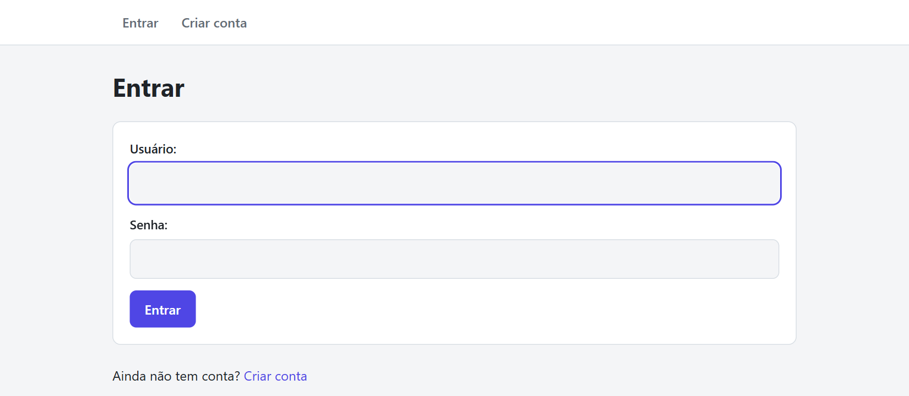
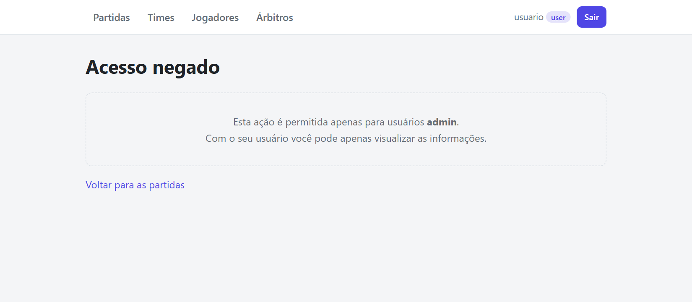
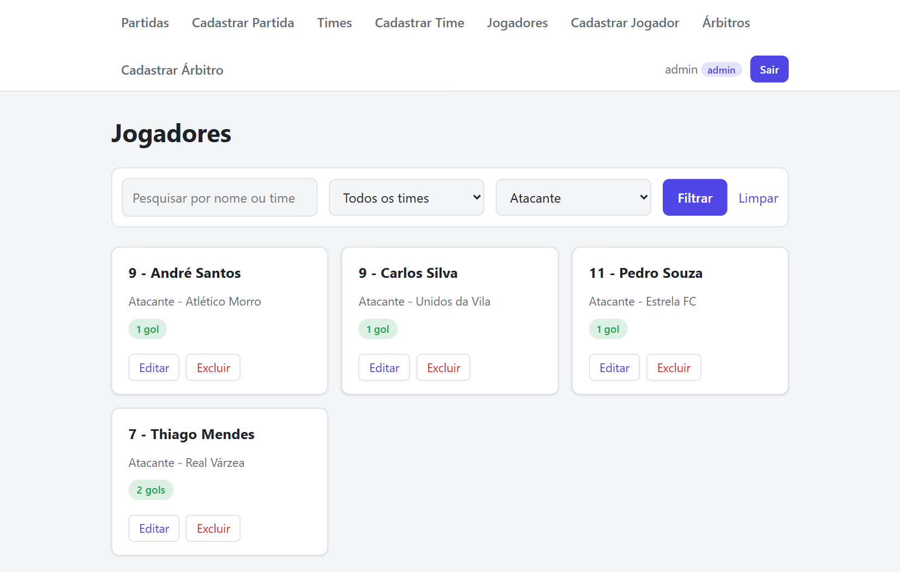
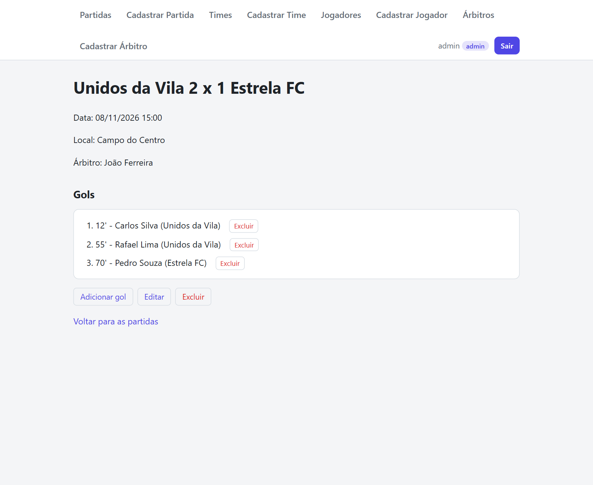

Campeonato Amador
O Campeonato Amador é uma aplicação web desenvolvida em Django para organizar um campeonato de futebol de várzea. O sistema permite cadastrar times, jogadores, árbitros e partidas, e registrar os gols de cada partida (quem marcou e em que minuto). A partir dos gols lançados o sistema calcula automaticamente o placar de cada jogo e o total de gols de cada jogador.
O objetivo do trabalho é aplicar na prática os conceitos vistos na disciplina: modelagem com relacionamentos 1:N e N:N, filtros de pesquisa, controle de acesso com dois níveis de usuário (admin e user) e o uso de views baseadas em classe (Class-Based Views) do Django.
| Tecnologia | Uso no projeto |
|---|---|
| Python 3 | Linguagem do back-end. |
| Django 6.1 | Framework web: ORM, views genéricas, autenticação (django.contrib.auth), templates e painel /admin. |
| SQLite | Banco de dados (arquivo db.sqlite3), padrão do Django para desenvolvimento. |
| HTML + CSS | Templates com herança (base.html) e uma folha de estilo própria com tema claro/escuro automático. |
| unittest (Django TestCase) | 16 testes automatizados que verificam relacionamentos, filtros e permissões. |
| Requisito | Status | Como foi atendido | Onde está |
|---|---|---|---|
| Relacionamento 1:N e N:N | Atendido | Quatro relações 1:N com ForeignKey (Time→Jogador, Time→Partida como casa e como visitante, Árbitro→Partida) e uma relação N:N Partida↔Jogador com ManyToManyField(through="Gol"). |
campeonato/models.py |
| Deve possuir filtros | Atendido | As quatro listagens têm filtros via GET: busca por texto em todas, e filtros por time e árbitro (partidas) e por time e posição (jogadores). Os filtros podem ser combinados. O /admin também tem list_filter e search_fields. |
views.py (get_queryset), templates *_lista.html, admin.py |
| Acesso em dois níveis de usuário (admin, user) | Atendido | Todas as páginas exigem login (LoginRequiredMixin). O user só visualiza; o admin (is_staff) também cadastra, edita, exclui e lança gols (AdminRequiredMixin). Telas de login, logout e criação de conta. Botões de admin ficam ocultos para o user e o acesso direto pela URL devolve 403. |
views.py, urls.py, base.html, 403.html, settings.py |
| Views baseadas em classe | Atendido | As 19 views do sistema (mais a de cadastro de usuário) são classes que herdam de ListView, DetailView, CreateView, UpdateView e DeleteView. Login e logout usam LoginView/LogoutView do Django. |
campeonato/views.py, campeonato/urls.py |
| Relatório sobre o projeto | Atendido | Este documento. | docs/ |
O sistema tem cinco tabelas: Time, Jogador, Arbitro, Partida e Gol. O diagrama abaixo mostra os campos e como as tabelas se ligam.
| Relação | Campo | Significado | Ao excluir o "1" |
|---|---|---|---|
| Time 1:N Jogador | Jogador.time | Um time tem vários jogadores; cada jogador é de um time só. | CASCADE — exclui os jogadores |
| Time 1:N Partida (casa) | Partida.timeCasa | Um time joga várias partidas em casa. | CASCADE |
| Time 1:N Partida (fora) | Partida.timeFora | Um time joga várias partidas como visitante. | CASCADE |
| Árbitro 1:N Partida | Partida.arbitro | Um árbitro apita várias partidas; cada partida tem um árbitro. | SET_NULL — a partida fica sem árbitro |
Como Partida tem duas chaves estrangeiras para a mesma tabela Time, cada uma recebe um related_name diferente (partidasCasa e partidasFora); sem isso o Django não saberia diferenciar time.partida_set.
A relação N:N entre Partida e Jogador representa "quais jogadores marcaram em quais partidas". Como era preciso guardar uma informação extra — o minuto do gol — foi usada uma tabela intermediária explícita (Gol) com o parâmetro through:
class Partida(models.Model): ... # N:N — uma partida tem gols de vários jogadores, e um jogador marca gols em várias partidas. # o through diz que a tabela do meio é a Gol, assim conseguimos guardar o minuto de cada gol jogadores = models.ManyToManyField(Jogador, through="Gol", related_name="partidas") class Gol(models.Model): # tabela do meio da relação N:N entre Partida e Jogador partida = models.ForeignKey(Partida, on_delete=models.CASCADE, related_name="gols") jogador = models.ForeignKey(Jogador, on_delete=models.CASCADE, related_name="gols") minuto = models.PositiveIntegerField()
Com isso é possível navegar nos dois sentidos: partida.jogadores.all() devolve os jogadores que marcaram na partida, e jogador.partidas.all() devolve as partidas em que o jogador marcou. O placar é calculado contando os gols de cada lado:
def golsCasa(self): return self.gols.filter(jogador__time=self.timeCasa).count() # conta só os gols de jogadores do time da casa
Todas as views do sistema foram escritas como classes que herdam das views genéricas do Django. Cada view genérica já sabe fazer o trabalho repetitivo (buscar o objeto, montar o formulário, validar, salvar e redirecionar), e a classe só informa o que muda: o model, o form_class, o template_name e o success_url. Isso reduziu bastante o código em relação às views em função, que repetiam o mesmo bloco if request.method == "POST" em todas as telas.
class TimeCreateView(AdminRequiredMixin, CreateView): model = Time form_class = TimeForm template_name = "campeonato/time_form.html" success_url = reverse_lazy("listaTimes") extra_context = {"tituloPagina": "Cadastrar Time", "h1": "Cadastrar Time", "btn": "Cadastrar"} # urls.py — toda view baseada em classe é ligada na URL com .as_view() path("times/cadastrar/", TimeCreateView.as_view(), name="cadastrarTime"),
| Entidade | Listar | Detalhe | Cadastrar | Editar | Excluir |
|---|---|---|---|---|---|
| Partida | PartidaListView | PartidaDetailView | PartidaCreateView | PartidaUpdateView | PartidaDeleteView |
| Gol | — | — | GolCreateView | — | GolDeleteView |
| Time | TimeListView | — | TimeCreateView | TimeUpdateView | TimeDeleteView |
| Jogador | JogadorListView | — | JogadorCreateView | JogadorUpdateView | JogadorDeleteView |
| Árbitro | ArbitroListView | — | ArbitroCreateView | ArbitroUpdateView | ArbitroDeleteView |
| Usuário | LoginView / LogoutView (prontas do Django) | CadastroUsuarioView | — | — | |
Herança usada: ListView (listas), DetailView (detalhe), CreateView, UpdateView e DeleteView (formulários), além de RedirectView para a página inicial.
Quando o comportamento padrão não basta, a classe sobrescreve apenas o método necessário:
get_queryset() — nas listas, aplica os filtros recebidos pela URL (seção 7).get_context_data() — nas listas, envia dados extras ao template, como as opções dos selects de filtro.form_valid() — em GolCreateView, liga o gol à partida da URL antes de salvar.get_form() — em GolCreateView, limita o campo "jogador" aos jogadores dos dois times da partida.get_success_url() — nas views de partida e de gol, volta para a tela de detalhe da partida depois de salvar ou excluir.test_func() — no AdminRequiredMixin, define quem é admin (seção 6).O controle de acesso usa o sistema de autenticação do próprio Django (django.contrib.auth) e dois mixins — classes que são "misturadas" às views pela herança múltipla:
| Nível | Quem é | O que pode fazer | Mixin usado |
|---|---|---|---|
| Visitante | Não está logado | Só acessa as telas de login e criar conta. Qualquer outra URL redireciona para o login. | — |
| user | Usuário logado comum (is_staff = False). Toda conta criada pela tela "Criar conta" é deste nível. | Ver partidas (lista e detalhe), times, jogadores e árbitros, e usar todos os filtros. | LoginRequiredMixin |
| admin | Usuário com is_staff = True | Tudo do user, mais cadastrar, editar e excluir todas as entidades, lançar gols e acessar o painel /admin. | AdminRequiredMixin |
class AdminRequiredMixin(LoginRequiredMixin, UserPassesTestMixin): # LoginRequiredMixin: quem não está logado é mandado para a tela de login # UserPassesTestMixin: quem está logado mas não passa no test_func recebe erro 403 (acesso negado) def test_func(self): return self.request.user.is_staff class PartidaListView(LoginRequiredMixin, ListView): ... # user e admin class PartidaCreateView(AdminRequiredMixin, CreateView): ... # só admin
A proteção é feita em duas camadas:
POST de exclusão manualmente, o Django responde 403 — Acesso negado (página templates/403.html) e nada é alterado.{% if user.is_staff %} para esconder do user os links "Cadastrar", "Editar", "Excluir" e o formulário de gols. O menu mostra o nome do usuário logado e o seu nível.As configurações LOGIN_URL, LOGIN_REDIRECT_URL e LOGOUT_REDIRECT_URL em settings.py definem para onde o usuário vai antes e depois do login. O logout é feito por um formulário POST, como exige o Django desde a versão 5.




/partidas/cadastrar/: acesso negado (403)Os filtros usam formulários com method="get": os valores escolhidos vão para a URL (por exemplo /jogadores/?time=2&posicao=atacante), o que permite salvar ou compartilhar o link de uma pesquisa. Na view, o método get_queryset() lê esses valores em self.request.GET e vai aplicando .filter() apenas nos campos preenchidos, por isso os filtros podem ser combinados.
| Tela | Filtro | Como funciona |
|---|---|---|
| Partidas | Busca por texto | Q(timeCasa__nome__icontains) | Q(timeFora__nome__icontains) | Q(local__icontains) |
| Time (select) | Partidas em que o time jogou em casa ou fora: Q(timeCasa_id=time) | Q(timeFora_id=time) | |
| Árbitro (select) | filter(arbitro_id=arbitro) | |
| Jogadores | Busca por texto | Nome do jogador ou nome do time (time__nome__icontains) |
| Time (select) | filter(time_id=time) | |
| Posição (select) | filter(posicao=posicao) — opções vêm de Jogador.POSICOES | |
| Times | Busca por texto | Nome ou bairro |
| Árbitros | Busca por texto | Nome ou telefone |
| Painel /admin | list_filter, search_fields | Filtros laterais por time, posição, árbitro e data. |
def get_queryset(self): jogadores = Jogador.objects.select_related("time").order_by("nome") busca = self.request.GET.get("busca", "") time = self.request.GET.get("time", "") posicao = self.request.GET.get("posicao", "") if busca: jogadores = jogadores.filter(Q(nome__icontains=busca) | Q(time__nome__icontains=busca)) if time: jogadores = jogadores.filter(time_id=time) if posicao: jogadores = jogadores.filter(posicao=posicao) return jogadores
Os filtros também foram usados para ligar as telas entre si: no card de um time, o botão "Ver jogadores" abre /jogadores/?time=<id>, e no card de um árbitro, "Ver partidas" abre /partidas/?arbitro=<id> — navegando pelos relacionamentos 1:N.

clean() do PartidaForm recusa a partida se o time da casa e o visitante forem iguais.get_form() da GolCreateView). Se alguém enviar o id de um jogador de outro time, o formulário fica inválido.unique=True no campo Time.nome.golsCasa(), golsFora(), placar()), evitando inconsistência.GolCreateView) ou exclui um gol lançado errado (GolDeleteView); o placar é recalculado na hora.CASCADE); excluir um árbitro mantém as partidas, só sem árbitro (SET_NULL). As telas de confirmação avisam o usuário sobre isso.
O arquivo campeonato/tests.py contém 16 testes que comprovam os requisitos. Eles rodam com python manage.py test num banco de dados temporário, sem afetar os dados reais. Resultado da última execução: Ran 16 tests — OK.
| Grupo | O que é verificado |
|---|---|
RelacionamentosTeste | Navegação 1:N (time.jogadores, arbitro.partidas) e N:N (partida.jogadores, jogador.partidas); cálculo do placar. |
AcessoTeste | Visitante é redirecionado ao login; user consegue ver todas as listas e o detalhe; user recebe 403 ao tentar cadastrar, editar, excluir ou lançar gol (inclusive via POST direto); user não vê os botões de admin; admin consegue cadastrar, editar e excluir; conta criada pela tela de cadastro é do nível user. |
PartidaGolTeste | Lançar gol; recusar gol de jogador de outro time; recusar time contra ele mesmo; editar partida; excluir gol (o placar muda). |
FiltrosTeste | Filtros de partida (time, árbitro, busca), de jogador (posição, time e combinados) e buscas de time e árbitro. |
> python manage.py test campeonato Found 16 test(s). System check identified no issues (0 silenced). ................ ---------------------------------------------------------------------- Ran 16 tests in 10.979s OK
campeonatoAmador/ ├── config/ # configurações do projeto (settings.py, urls.py) ├── campeonato/ # app principal │ ├── models.py # Time, Jogador, Arbitro, Partida, Gol │ ├── views.py # views baseadas em classe + AdminRequiredMixin │ ├── urls.py # rotas (.as_view()), login, logout, cadastro │ ├── forms.py # ModelForms e validação │ ├── admin.py # painel /admin com filtros e inlines │ ├── tests.py # 16 testes automatizados │ ├── management/commands/criar_usuarios.py │ ├── templates/ # base.html, listas, formulários, login, 403 │ └── static/ # CSS ├── docs/ # este relatório ├── manage.py └── requirements.txt
python -m venv venv venv\Scripts\activate pip install -r requirements.txt python manage.py migrate python manage.py criar_usuarios # cria os usuários de exemplo python manage.py runserver # acessar http://127.0.0.1:8000
| Usuário | Senha | Nível |
|---|---|---|
admin | admin123 | admin — pode tudo, inclusive o painel /admin |
usuario | usuario123 | user — apenas visualiza |
is_staff) no painel /admin.O projeto atende aos cinco requisitos propostos. A modelagem usa relações 1:N com ForeignKey e uma relação N:N com tabela intermediária (through), que permite guardar o minuto de cada gol e calcular placares e artilharia sem dados duplicados. As listagens oferecem filtros combináveis, o acesso é dividido entre admin e user com proteção no servidor e na interface, e todas as telas foram implementadas com views baseadas em classe.
A migração das views em função para classes mostrou na prática a vantagem das views genéricas do Django: o código ficou mais curto e padronizado, e regras como "precisa estar logado" ou "precisa ser admin" passaram a ser declaradas uma única vez nos mixins, em vez de repetidas em cada função. Os testes automatizados garantem que essas regras continuem funcionando caso o sistema seja alterado no futuro.
Como evoluções possíveis ficam: tabela de classificação (pontos, saldo de gols), ranking de artilheiros, paginação nas listas e cadastro de rodadas do campeonato.